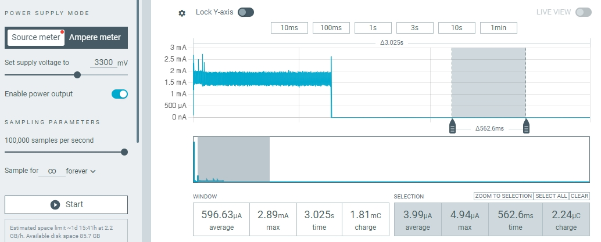
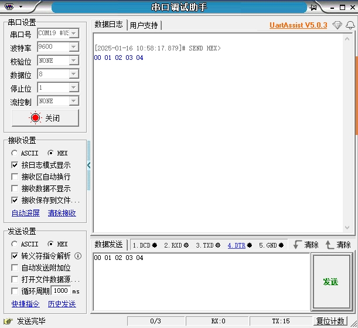
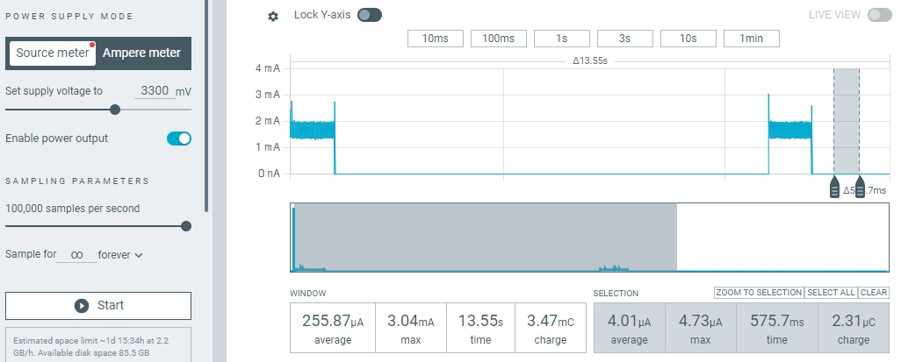
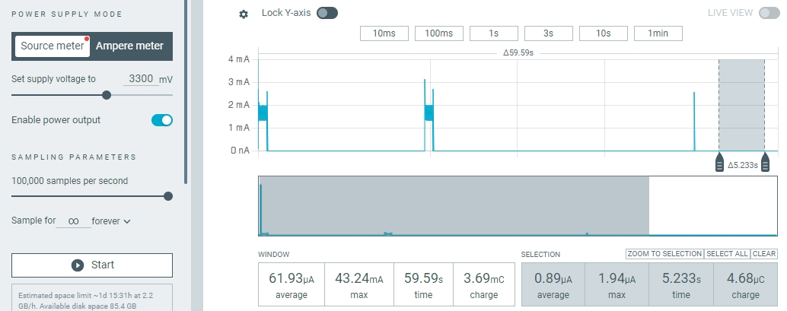
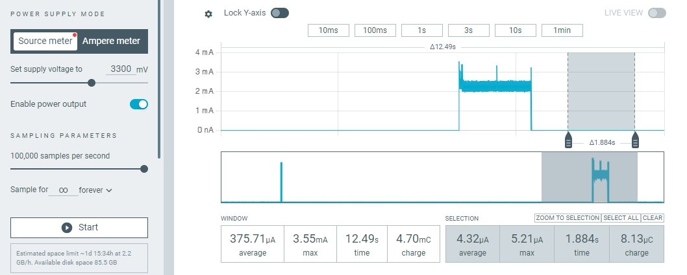

Multiple Wakeup Source¶
1 功能概述¶
本例程是一个稍微复杂一些的应用，用于演示多种唤醒源、多种低功耗模式的切换，具体包括以下功能：
DeepSleep 状态下，通过 UART1 Rx 引脚唤醒芯片，并完成 UART1 数据接收（对应 SoC GPIO 唤醒）
DeepSleep 状态下，通过 SleepTimer 定时唤醒
Standby Mode 1 状态下，通过按键唤醒芯片（对应 SoC GPIO 唤醒）
2 环境准备¶
硬件设备与线材：
PAN107X EVB 核心板与底板各一块
JLink 仿真器（用于烧录例程程序）
电流计（本文使用电流可视化测量设备 PPK2 [Nordic Power Profiler Kit II] 进行演示）
USB-TypeC 线一条（用于底板供电和查看串口打印 Log）
USB 转串口模块一个（用于与芯片 UART1 通信）
杜邦线数根或跳线帽数个（用于连接各个硬件设备）
硬件接线：
将 EVB 核心板插到底板上
为确保能够准确地测量 SoC 本身的功耗，排除底板外围电路的影响，请确认 EVB 底板上的：
Voltage 排针组中的 VCC 和 VDD 均接至 3V3
POWER 开关从 LDO 档位拨至 BAT 档位（并确认底板背部的电池座内没有纽扣电池）
使用 USB-TypeC 线，将 PC USB 插口与 EVB 底板 USB->UART 插口相连
使用杜邦线将 EVB 底板上的 TX 引脚接至核心板 P16，RX 引脚接至核心板 P17（用于打印串口 Log）
使用杜邦线将 USB 转串口模块的 RX 引脚与核心板上的 P10 引脚相连，TX 引脚与核心板上的 P07 引脚相连（用于通过 UART1 接收 PC 发送的数据）
使用杜邦线将 JLink 仿真器的：
SWD_CLK 引脚与 EVB 底板的 P00 排针相连
SWD_DAT 引脚与 EVB 底板的 P01 排针相连
SWD_GND 引脚与 EVB 底板的 GND 排针相连
将 PPK2 硬件的：
USB DATA/POWER 接口连接至 PC USB 接口
VOUT 连接至 EVB 底板的 VBAT 排针
GND 连接至 EVB 底板的 GND 排针
PC 软件:
串口调试助手（UartAssist）或终端工具（SecureCRT），波特率 921600（接至芯片 UART0，用于接收串口打印 Log）
串口调试助手（UartAssist），波特率 9600（接至芯片 UART1，用于接受 PC 发送过来的数据）
nRF Connect Desktop（用于配合 PPK2 测量 SoC 电流）
3 编译和烧录¶
例程位置：<PAN10XX-NDK>\01_SDK\nimble\samples\low_power\multiple_wakeup_source\keil_107x
双击 Keil Project 文件打开工程进行编译烧录，烧录成功后断开 JLink 连线以避免漏电。
4 例程演示说明¶
PC 上打开 PPK2 Power Profiler 软件，供电电压选择 3300 mV，然后打开供电开关
从串口 Log (UART0) 中看到如下的打印信息：
Try to load HW calibration data.. DONE. - Chip Info : 0x1 - Chip CP Version : 255 - Chip FT Version : 7 - Chip MAC Address : E110000052E3 - Chip UID : 060300465454455354 - Chip Flash UID : 4250315A3538380B00CE12435603C678 - Chip Flash Size : 512 KB [I] App started.. [I] Reset Reason: nRESET Pin Reset. [I] Busy wait a while.. [I] Wait for Task Notifications.. [I] SleepTimer1 started, timeout=30s
此时观察芯片电流波形，发现稳定在 4uA 左右（说明芯片成功进入了 DeepSleep 模式）：

系统初始化后进入 DeepSleep 模式¶
在 30s 内，使用串口调试助手通过 UART1（波特率 9600）向芯片发送起始字节为 0x00 的二进制字节串：

通过串口将芯片从 DeepSleep 状态下唤醒¶
此时再观察串口 Log，可以看到成功检测到 GPIO P07 中断，随后 app task 向下执行，SleepTimer1 被停止，随后 UART1 中断服务程序触发，收到并打印除起始字节 0x00 外的剩下的所有数据，随后 app task 重新执行到等待 Notification 的位置，并触发系统调度到 Idle 线程，并触发重新启动 SleepTimer1 的流程：
[I] UART1 Rx (P07) GPIO wakeup triggered.. [I] A notification received, value: 1. [I] SleepTimer1 stopped. [I] Busy wait a while.. Data received from UART: 0x01 0x02 0x03 0x04 [I] Wait for Task Notifications.. [I] SleepTimer1 started, timeout=30s
再观察芯片电流波形，可以看到芯片触发了 DeepSleep 唤醒，一次唤醒持续了约 1s 左右时间，随后重新进入 DeepSleep 状态等待下次唤醒：

通过 UART1 Rx IO（P07）的 GPIO 方式将系统唤醒，之后重新进入 DeepSleep 状态¶
这次在 DeepSleep 状态下等待 30s 以上，可以看到会触发 SleepTimer1 超时唤醒，并随即进入 Standby Mode 1 状态：
[I] Soc has stayed in deepsleep mode more than 30s, now try to enter standby mode 1..
此时再观察芯片电流波形，可以看到芯片触发了 DeepSleep 唤醒，随后很快进入了 Standby Mode 1 状态（从底电流变为 1uA 左右可看出）：

通过 SleepTimer1 将芯片从 DeepSleep 状态下唤醒，随即进入 Standby Mode 1 状态¶
本例程中 Stanby Mode 1 状态下至支持 WKUP 按键（P02）唤醒，此时我们按一下底板的 WKUP 按键，可以看到芯片成功被唤醒，随后重新进入 DeepSleep 状态：
Try to load HW calibration data.. DONE. - Chip Info : 0x1 - Chip CP Version : 255 - Chip FT Version : 7 - Chip MAC Address : E110000052E3 - Chip UID : 060300465454455354 - Chip Flash UID : 4250315A3538380B00CE12435603C678 - Chip Flash Size : 512 KB [I] App started.. [I] Reset Reason: Standby Mode 1 GPIO Wakeup. [I] gpio wakeup src flag = 0x00000004 [I] SoC is waked up by GPIO P0_2. [I] WKUP key (P02) pressed.. [I] Busy wait a while.. [I] Wait for Task Notifications.. [I] SleepTimer1 started, timeout=30s [I] A notification received, value: 1. [I] SleepTimer1 stopped. [I] Busy wait a while.. [I] Wait for Task Notifications.. [I] SleepTimer1 started, timeout=30s

通过 WKUP 按键将芯片从 Standby Mode 1 状态下唤醒，随后重新进入 DeepSleep 状态¶
5 开发者说明¶
5.1 SDK Config 配置¶
与本例程相关的 SDK Config (sdk_config.h) 配置有：
SoC Platform : Chip Power Mode
芯片供电选择 DCDC 模式，以降低芯片动态功耗
对应宏配置
CONFIG_SOC_DCDC_PAN1070 = 1
RTOS Config : Enable OS Idle Hook
使能 FreeRTOS Ilde Task Hook 机制
对应宏配置
configUSE_IDLE_HOOK = 1
Power Management : Enable Low Power Mode
使能系统低功耗功能
对应宏配置
CONFIG_PM = 1
Log & Debug Config : Enable App Log
使能 App Log 功能
对应宏配置
APP_LOG_EN = 1
Log & Debug Config : Enable App Log : Log to UART
将 App Log 输出至串口
对应宏配置
CONFIG_UART_LOG_ENABLE = 1
5.2 程序代码¶
5.2.1 主程序¶
本例程中，OS 为使能状态，因此主程序 main() 函数也是 OS Main Task 的入口函数，其内容如下：
int main(void)
{
/* Application initialization */
app_setup();
/* Application main infinite loop */
app_main_loop();
return 0;
}
5.2.2 App Setup 初始化¶
App 初始化 app_setup() 函数内容如下：
void app_setup(void)
{
APP_LOG_INFO("App started..\n\n");
uint8_t rst_reason;
/* Get the last reset reason */
APP_LOG_INFO("Reset Reason: ");
rst_reason = soc_reset_reason_get();
switch (rst_reason) {
case SOC_RST_REASON_POR_RESET:
APP_LOG("Power On Reset.\n");
break;
case SOC_RST_REASON_PIN_RESET:
APP_LOG("nRESET Pin Reset.\n");
break;
case SOC_RST_REASON_SYS_RESET:
APP_LOG("NVIC System Reset.\n");
break;
case SOC_RST_REASON_STBM1_GPIO_WAKEUP:
APP_LOG("Standby Mode 1 GPIO Wakeup.\n");
parse_stbm1_gpio_wakeup_source();
break;
default:
APP_LOG("Unhandled Reset Reason (%d), refer to more reason define in soc_api.h!\n", rst_reason);
}
/* Enable and init UART1 for data transmission */
uart1_comm_init();
/* Enable specific gpios wakeup for wakeup use */
wakeup_gpio_init();
}
打印 App 初始化 Log
获取并打印本次芯片启动的复位原因
在 uart1_comm_init() 函数中初始化 UART1 通信配置
在 wakeup_gpio_init() 函数中初始化按键 GPIO P02 配置
5.2.3 App Main Task Loop 任务循环¶
App Main Task 循环 app_main_loop() 函数内容如下：
void app_main_loop(void)
{
uint32_t ulNotificationValue;
/* Store the handle of current task. */
xTaskToNotify = xTaskGetCurrentTaskHandle();
if (xTaskToNotify == NULL) {
app_assert("Error, get current task handle failed!\n");
}
while (1) {
/* Busy wait a while to simulate cpu busy status */
APP_LOG_INFO("Busy wait a while..\n");
soc_busy_wait(1000000);
/* Try to take wakeup_sem */
APP_LOG_INFO("Wait for Task Notifications..\n");
/*
* Wait to be notified that gpio key is pressed (gpio irq occured). Note the first parameter
* is pdTRUE, which has the effect of clearing the task's notification value back to 0, making
* the notification value act like a binary (rather than a counting) semaphore.
*/
ulNotificationValue = ulTaskNotifyTake(pdTRUE, portMAX_DELAY);
APP_LOG_INFO("A notification received, value: %d.\n\n", ulNotificationValue);
/* Stop the slptmr1 timer (by resetting the counter) */
LP_SetSleepTime(ANA, 0, LP_SLPTMR_CH1);
APP_LOG_INFO("SleepTimer1 stopped.\n");
}
}
获取当前任务的 Task Handle，用于后续中断中给次任务发送通知使用
在随后的
while(1)循环中：调用
soc_busy_wait()接口使芯片在 Active 状态下全速运行 1s尝试获取任务通知（Task Notify），并打印相关的状态信息
若成功获取到任务通知，则停止 SleepTimer 1 定时器（将定时时间配置为 0）
5.2.4 UART1 初始化程序¶
UART1 初始化程序 uart1_comm_init() 函数内容如下：
static void uart1_comm_init(void)
{
/* Enable UART1 Clock */
CLK_APB2PeriphClockCmd(CLK_APB2Periph_UART1, ENABLE);
/* Configure UART Pinmux */
SYS_SET_MFP(P1, 0, UART1_TX);
SYS_SET_MFP(P0, 7, UART1_RX);
/* Enable digital input path of UART Rx Pin */
GPIO_EnableDigitalPath(P0, BIT7);
/* Init UART1 */
UART_InitTypeDef Init_Struct = {
.UART_BaudRate = 9600,
.UART_LineCtrl = Uart_Line_8n1,
};
UART_Init(UART1, &Init_Struct);
UART_EnableFifo(UART1);
/* Configure interrupt of UART1 */
UART_SetRxTrigger(UART1, UART_RX_FIFO_HALF_FULL);
UART_EnableIrq(UART1, UART_IRQ_RECV_DATA_AVL); // Enable RDA Interrupt
NVIC_EnableIRQ(UART1_IRQn); // Enable target UART INT in NVIC
}
此函数使用 Panchip Low-Level UART Driver 对 UART 进行配置
实际上也可使用更上层的 Panchip HAL UART Driver 进行配置，具体可参考 UART FIFO 例程中的相关介绍
使用 Low-Level Driver 配置 UART1 的流程为：
开启 APB1 上 UART1 时钟
分别将 P10 和 P07 的 PINMUX 配置为 UART1 Tx 和 RX 功能
使能 UART1 Rx 引脚的数字输入功能
初始化 UART1，参数配置为波特率 9600，数据宽度 8-bit，无奇偶校验，1 位停止位
使能 UART1 的 FIFO 功能
配置 UART1 Rx FIFO 的 Trigger Level 为 Half-Full（即 8 字节）
使能 UART1 Rx Data Receive 中断
使能 NVIC 层的 UART1 IRQ
5.2.5 UART1 中断服务程序¶
UART1 的中断服务程序如下：
static void UART_HandleReceivedData(UART_T* UARTx)
{
static uint8_t rx_index = 0;
APP_LOG("Data received from UART: ");
while (!UART_IsRxFifoEmpty(UARTx)) {
uart_data_buf[rx_index] = UART_ReceiveData(UARTx);
APP_LOG("0x%02x ", uart_data_buf[rx_index]);
rx_index++;
// Handle Rx buffer full
if (rx_index >= UART_DATA_BUFF_SIZE) {
APP_LOG_WRN("WARNING: Too much data received, UART Rx buffer full!\n");
rx_index = 0; // Reset Rx buf index
break;
}
}
APP_LOG("\n");
}
static void UART_HandleProc(UART_T *UARTx)
{
UART_EventDef event = UART_GetActiveEvent(UARTx);
switch (event) {
case UART_EVENT_DATA:
case UART_EVENT_TIMEOUT:
/* Handle received data */
UART_HandleReceivedData(UARTx);
break;
case UART_EVENT_NONE:
/* Just ignore this event. */
break;
default:
APP_LOG_WRN("WARNING: Unhandled event, IID: 0x%x\n", event);
break;
}
}
void UART1_IRQHandlerOverlay(void)
{
UART_HandleProc(UART1);
}
上述 3 个函数中，
UART1_IRQHandlerOverlay()是中断服务程序入口，UART_HandleProc()是通用的 UART Rx 处理流程模板，UART_HandleReceivedData()是本例程的逻辑处理UART_HandleReceivedData()函数的主要逻辑是，当发现 UART Rx FIFO 非空时，将其读空，并将数据存储在一个全局的数组中，同时向串口打印数据信息
5.2.6 GPIO 初始化程序¶
GPIO 初始化程序 wakeup_gpio_init() 函数内容如下：
static void wakeup_gpio_key_init(void)
{
/* Set pinmux func as GPIO */
SYS_SET_MFP(P0, 2, GPIO);
/* Configure debounce clock */
GPIO_SetDebounceTime(GPIO_DBCTL_DBCLKSRC_RCL, GPIO_DBCTL_DBCLKSEL_4);
/* Enable input debounce function of specified GPIO */
GPIO_EnableDebounce(P0, BIT2);
/* Set GPIO to input mode */
GPIO_SetMode(P0, BIT2, GPIO_MODE_INPUT);
CLK_Wait3vSyncReady(); /* Necessary for P02 to do manual aon-reg sync */
/* Enable internal pull-up resistor path */
GPIO_EnablePullupPath(P0, BIT2);
CLK_Wait3vSyncReady(); /* Necessary for P02 to do manual aon-reg sync */
/* Wait for a while to ensure the internal pullup is stable before entering low power mode */
soc_busy_wait(10000);
/* Disable P02 interrupt at this time */
GPIO_DisableInt(P0, 2);
}
static void wakeup_gpio_uart1_rx_pin_init(void)
{
/* Set GPIO to input mode */
GPIO_SetMode(P0, BIT7, GPIO_MODE_INPUT);
/* Enable internal pull-up resistor path */
GPIO_EnablePullupPath(P0, BIT7);
/* Disable P07 interrupt before entering deepsleep */
GPIO_DisableInt(P0, 7);
}
static void wakeup_gpio_init(void)
{
/* Configure gpio wakeup key (P02) */
wakeup_gpio_key_init();
/* Configure gpio wakeup pin for uart rx */
wakeup_gpio_uart1_rx_pin_init();
/* Enable GPIO IRQs in NVIC */
NVIC_EnableIRQ(GPIO0_IRQn);
}
本例程中的 GPIO 配置分三部分：
GPIO P02 (WKUP 按键) 初始化配置函数
wakeup_gpio_key_init()，使用 Low-Level GPIO Driver：配置 P02 引脚的 Pinmux 为 GPIO 功能（芯片上电默认功能，因此可以省略）
使能 P02 去抖功能（并配置去抖时间）
配置 P02 为数字输入模式
使能 P02 内部上拉电阻（按键没有外部上拉电阻）
关闭 P02 的中断使能
UART Rx（P07）引脚的 GPIO 初始化配置函数
wakeup_gpio_uart1_rx_pin_init()配置 P07 引脚为数字输入功能
使能 P07 引脚的内部上拉电阻
关闭 P07 引脚的中断使能
在
wakeup_gpio_init()函数尾部使能 NVIC 层的 GPIO 中断 IRQ
5.2.7 GPIO 中断服务程序¶
GPIO P0 的中断服务程序如下：
CONFIG_RAM_CODE void GPIO0_IRQHandlerOverlay(void)
{
/* Check if WKUP (P02) button pressed */
if (GPIO_GetIntFlag(P0, BIT2)) {
GPIO_ClrIntFlag(P0, BIT2);
APP_LOG_INFO("WKUP key (P02) pressed..\n");
}
/* Check if UART1 Rx (P07) GPIO wakeup triggered */
if (GPIO_GetIntFlag(P0, BIT7)) {
/* Clear gpio pin irq flag */
GPIO_ClrIntFlag(P0, BIT7);
while (P07 == 0) {
/* Busy wait until P07 pulled high, which means the 1st wakup
* trigger character (0x00) send done.
*/
}
/* Resume UART1 PIN configs after P07 pulled high */
SYS_SET_MFP(P1, 0, UART1_TX);
SYS_SET_MFP(P0, 7, UART1_RX);
GPIO_DisableInt(P0, 7);
APP_LOG_INFO("UART1 Rx (P07) GPIO wakeup triggered..\n");
}
/* Try to do context switch right after current isr return */
taskYIELD();
}
由于本例程使用 Low-Level GPIO Driver，因此每个 GPIO Port 均需编写自己的中断服务函数，其内部可通过
GPIO_GetIntFlag()接口判断触发中断的是当前 port 的哪根 pin在中断服务函数中需注意调用
GPIO_ClrIntFlag()接口清除中断标志位若检测到 GPIO P0 中断触发原因为 P02，则直接打印 Log
若检测到 GPIO P0 中断触发原因为 P07，则说明当前是通过 UART Rx 引脚的方式触发的中断，此时先一直等待直到确定 P07 拉高，然后重新将 P10/P07 引脚的 PINMUX 功能配置为 UART1，并关闭 P07 中断
在中断服务函数结尾通过调用 FreeRTOS
taskYIELD()接口告知系统在退出当前中断服务程序后立刻触发尝试任务切换的流程
5.2.8 SleepTimer 1 中断服务回调函数¶
SleepTimer 1 的中断服务回调函数如下：
/* This function overrides the reserved weak function with same name in soc_pm.c */
void sleep_timer1_handler(void)
{
APP_LOG_INFO("\nSoc has stayed in deepsleep mode more than %ds, now try to enter standby mode 1..\n\n", INTERVAL_FOR_SWITCH_LOWPOWER_MODE);
/* Wait until all UART0 data sending done before entering standby mode */
while (!(UART_GetLineStatus(UART0) & UART_LINE_TXSR_EMPTY)) {
/* Busy wait */
}
/* Enable P02 interrupt before entering standby mode for wakeup */
GPIO_EnableInt(P0, 2, GPIO_INT_FALLING);
/* Enter standby mode1 with all sram power off */
soc_enter_standby_mode_1(STBM1_WAKEUP_SRC_GPIO, STBM1_RETENTION_SRAM_NONE);
APP_LOG("WARNING: Failed to enter SoC standby mode 1 due to unexpected interrupt detected.\n");
APP_LOG(" Please check if there is an unhandled interrupt during the standby mode 1\n");
APP_LOG(" entering flow.\n");
while (1) {
/* Busy wait */
}
}
芯片共有 3 个 SleepTimer，分别为 SleepTimer 0、SleepTimer 1 和 SleepTimer 2，它们共用一个中断服务函数
SLPTMR_IRQHandler()，此函数是在 soc.c 中实现的；其中 SleepTimer0 被用作 OS Tick，因此在 App 层只可通过回调函数使用 SleepTimer 1 和 SleepTimer 2本例程我们在 App 中实现了
sleep_timer1_handler()中断回调函数，其行为是：向串口打印将要进入 Standby Mode 1 状态的 Log
确保 UART0 Tx FIFO 中没有数据（即确保所有串口 Log 均已成功发出）
使能 P02 引脚中断，并配置为下降沿触发中断（唤醒）
调用
soc_enter_standby_mode_1()接口使芯片进入 Standby Mode 1 的 GPIO 唤醒模式，且在此模式下所有 SRAM 均掉电以节省功耗
5.2.9 与低功耗相关的 Hook 函数¶
本例程用到了 3 个与低功耗密切相关的 Hook 函数：
/*
* This is the application hook function running in OS IDLE task. Before use this, the
* macro configUSE_IDLE_HOOK should be enabled in FreeRTOSConfig.h.
*
* Note that the function definition is a bit different with FreeRTOS original one, that
* is, here we add a return value for flexibility.
*
* Return Value:
* - false: Continue run the following code after vApplicationIdleHook() in IDLE task,
* which is equivalent to the original FreeRTOS implementation.
* - true: Avoid run following code after vApplicationIdleHook() in IDLE task, and this
* could prevent SoC entering DeepSleep flow when CONFIG_PM enabled.
*/
bool vApplicationIdleHook(void)
{
/*
* Enter sleep mode (instead of deepsleep) if UART Rx FIFO is not empty
* (Which means there is already data receiving from remote)
*/
if (!UART_IsRxFifoEmpty(UART1)) {
__disable_irq();
__WFI();
__enable_irq();
/* Avoid entering DeepSleep flow here */
return true;
}
/* Allow entering DeepSleep flow */
return false;
}
/*
* This is hook function runs right after entering SoC DeepSleep Flow.
* Note that either the os scheduler or systick are stopped before running this
* function, so do not run any os related objects (such as OS Timer) here.
*/
CONFIG_RAM_CODE void vSocDeepSleepEnterHook(void)
{
/* Enable and Set timeout of SleepTimer1 */
uint32_t timeout = soc_32k_clock_freq_get() * INTERVAL_FOR_SWITCH_LOWPOWER_MODE;
LP_SetSleepTime(ANA, timeout, LP_SLPTMR_CH1);
APP_LOG_INFO("SleepTimer1 started, timeout=%ds\n", INTERVAL_FOR_SWITCH_LOWPOWER_MODE);
/* Handle UART0 (Log UART) */
/* Wait until all UART0 data sending done before entering deepsleep mode */
while (!(UART_GetLineStatus(UART0) & UART_LINE_TXSR_EMPTY)) {
/* Busy wait */
}
/* Reset UART0 PINs to GPIO function and disable digital input path of UART0 Rx PIN to avoid possible current leakage. */
SYS_SET_MFP(P1, 6, GPIO);
SYS_SET_MFP(P1, 7, GPIO);
GPIO_DisableDigitalPath(P1, BIT7);
/* Handle UART1 (Data UART) */
/* Wait until all UART1 data sending done before entering deepsleep mode */
while (!(UART_GetLineStatus(UART1) & UART_LINE_TXSR_EMPTY)) {
/* Busy wait */
}
/* Reset UART1 PINs to GPIO function and enable gpio interrupt for uart rx pin. */
SYS_SET_MFP(P1, 0, GPIO);
SYS_SET_MFP(P0, 7, GPIO);
GPIO_EnableInt(P0, 7, GPIO_INT_FALLING);
/* Enable P02 interrupt before entering deepsleep mode for wakeup */
GPIO_EnableInt(P0, 2, GPIO_INT_FALLING);
}
CONFIG_RAM_CODE void vSocDeepSleepExitHook(void)
{
/* Resume UART0 PIN Configurations to reenable UART0 function */
SYS_SET_MFP(P1, 6, UART0_TX);
SYS_SET_MFP(P1, 7, UART0_RX);
GPIO_EnableDigitalPath(P1, BIT7);
/* Resume UART1 PIN Configurations here to reenable UART1 function if is not waked up by P07 */
if (!GPIO_GetIntFlag(P0, BIT7)) {
SYS_SET_MFP(P1, 0, UART1_TX);
SYS_SET_MFP(P0, 7, UART1_RX);
GPIO_DisableInt(P0, 7);
}
/* Re-disable P02 interrupt after deepsleep wakeup */
GPIO_DisableInt(P0, 2);
/* Trigger App Task reschedule after wakeup from deepsleep mode */
xTaskNotifyGive(xTaskToNotify);
}
FreeRTOS 有一个优先级最低的 Idle Task，当系统调度到此任务后会对当前状态进行检查，以判断是否允许进入芯片 DeepSleep 低功耗流程
若程序执行到 Idle Task，则会立刻触发 FreeRTOS 的 Idle Hook 机制，调用名为
vApplicationIdleHook()的函数，我们在此函数中判断 UART1 Rx FIFO 是否为空：若是则函数直接返回 false，表示允许系统稍后进入 DeepSleep 流程
若非则使系统立刻进入 Sleep（WFI）流程
若程序执行到 Idle Task 的 DeepSleep 子流程中，会在 SoC 进入 DeepSleep 模式之前执行
vSocDeepSleepEnterHook()函数，在 SoC 从 DeepSleep 模式下唤醒后执行vSocDeepSleepExitHook()函数：本例程在
vSocDeepSleepEnterHook()函数中，实现了如下逻辑：使能 SleepTimer1，并设置 30s 超时时间
等待 UART0 串口所有 Log 数据都打印完毕（即 UART0 Tx FIFO 为空）
将 P16、P17 两个引脚切换回 GPIO 功能，并关闭 P17 数字输入使能
等待 UART1 串口所有数据（若有）都发送完毕（即 UART1 Tx FIFO 为空）
将 P10、P07 两个引脚切换回 GPIO 功能，并使能 P07 引脚的中断，将其配置为下降沿触发（即使能 UART Rx 引脚接收数据唤醒芯片的功能）
使能 P02 引脚的中断，并配置为下降沿触发（即使能 WKUP 按键唤醒功能）
本例程在
vSocDeepSleepExitHook()函数中，实现了如下逻辑：将 P16、P17 两个引脚重新切换成 UART0 功能，并重新打开 P17 数字输入使能
检测当前唤醒原因是否为 P07 中断（即 UART1 Rx 引脚接收到了足够时间的低电平），若不是则立刻将 P10、P07 两个芯片重新切换成 UART1 功能，并关闭 P07 GPIO 中断
注：若是 P07 中断，则此处先不将 P10、P07 两个引脚切换为 UART1 功能，而是随后在 GPIO 中断服务程序中，先确认 P07 引脚检测到高电平之后，才将 PINMUX 切换为 UART1，这样可以确保 UART1 Rx 引脚接收到的第一个唤醒字节 0x00 完全接收完成，再切 PINMUX 收取 UART1 Rx 线上发送过来的实际数据